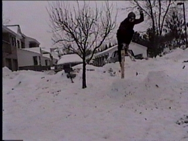

How to 180
The 180 is a cool trick that you can do off anything. Since it's only half a turn you will land fakie or take off fakie.
The Steps for landing fakie:
1)You may want to counter with your shoulders a little(all this means
is turn your shoulders away from the direction you spin)
2)When you get ot the very top of the jump just uncounter your shoulders
and then look back to the jump. Pop if you want to
3)Land as on top of your skis as you can and ride it out.
4)Slide a 180 back to normal
The Steps for taking off fakie:
1)Slide around backwards to look up the hill
2)When you hit the jump just pull a little with your head
3)Land on your feet
180 Grab:
Right once you start spinning you bring your foot/feet up and then do
you grab. Remember to let go to land.
Picture:
